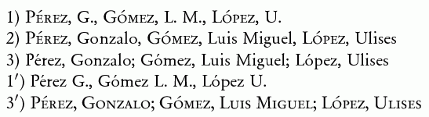
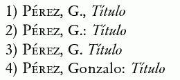

La economía ortotipográfica en las bibliografías
La norma ISO 690:2010 sobre bibliografías establece los datos que deben darse y su orden, pero deja sin definir la puntuación y el estilo de la letra (redonda, cursiva, versalitas…). Es lógico que así sea, puesto que hay muchas variaciones en función de los países y de los estilos editoriales. La norma está en inglés y por tanto emplea una puntuación acorde con la lengua en la que está escrita, pero se insiste en que no es normativa y que tiene como único fin poder dar ejemplos de forma coherente.
Las referencias se basan en normas puramente convencionales y no son texto, por lo que no se pueden aplicar directamente sus normas de puntuación, que se basan en las construcciones sintácticas o la fonética. Su función en las bibliografías es más visual que semántica, aunque el valor que tienen en el texto influye en su interpretación por el lector.
Para separar los datos, importa más la composición de cada uno de ellos que el signo de puntuación de separación, que suele pasar inadvertido; en cambio, la alternancia de redonda, versalita, cursiva y entrecomillados separa netamente unos campos de otros. También los diferentes tipos de datos, aunque no se destaquen de otra forma, permiten distinguir unos de otros: por ejemplo, el año de publicación es siempre un número.
Una vez que se tienen diferenciados los campos por el estilo de la letra, no hay necesidad de introducir un nivel adicional de separación con diferentes signos de puntuación, que ya poco ayudan al lector y a cambio añaden complejidad a su preparación. Así, podríamos enunciar la idea de economía ortotipográfica: lo que ya se separa con claridad por un procedimiento no hay necesidad de separarlo por otro. Aplicado a la puntuación, el esquema más simple es separar todos los campos con un solo signo, como la coma.
En función de los medios disponibles en la composición de un texto, podemos optar por diferentes combinaciones. Así, la carencia de versalitas puede motivar que empleemos una puntuación que no sería necesaria en caso de tenerlas.
Veamos algunos ejemplos:

En la 1 debe quedar claro que un autor no se identifica por una inicial, por lo que ese dato solo puede corresponder al nombre pospuesto. En la 2 se dan los nombre, pero los apellidos van en versalitas; ya tenemos la diacrisis (es decir, la distinción tipográfica) necesaria y no es necesario ir más allá. En la 3 (y la 3’), en cambio, no hay diferencia alguna entre nombres y apellidos, lo que obliga a separar más claramente los autores con punto y coma.
Una variante de la primera es suprimir incluso la coma entre apellido y nombre, en el entendido de que un apellido no puede terminar con unas iniciales. La 3’ ha sido muy habitual en España.

El título siempre debería tener algún tipo de diacrisis, ya sea la cursiva, ya sea el entrecomillado, por lo que los dos puntos son redudantes. La economía en este caso se inclina por la coma. Además, los dos puntos presentan un problema: al ser de la misma altura que las minúsculas e ir pegado a la palabra precedente, se integra visualmente en ella, y en lugar de separar elementos distorsiona uno de ellos (4). La coma, al ser baja, no se integra igual y además crea un espacio adicional que ayuda a distinguir mejor la separación.
El punto como separador desaparece tras una inicial (3) pero no tras nombre; en caso de nombres de una letra (que los puede haber) resulta ambiguo y por tanto es mejor evitar este signo.
El problema con los dos puntos es el mismo que en el ejemplo anterior. Dado que el orden de los datos es siempre el mismo y la editorial siempre va seguida de la fecha, no tiene por qué darse ninguna ambigüedad en el empleo de la coma, que ha sido la práctica tradicional en español (2): de nuevo la economía diacrítica se inclina por ella.